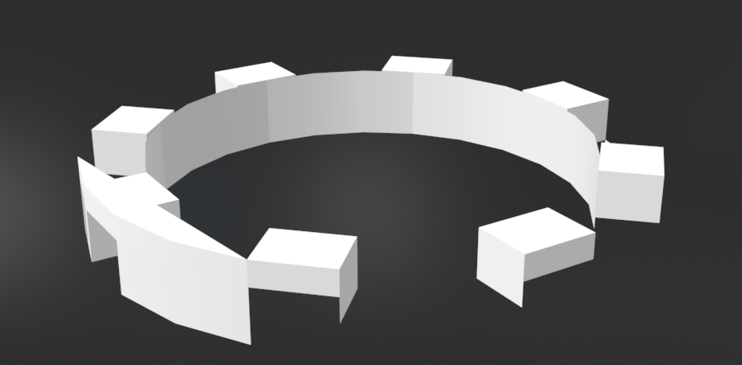
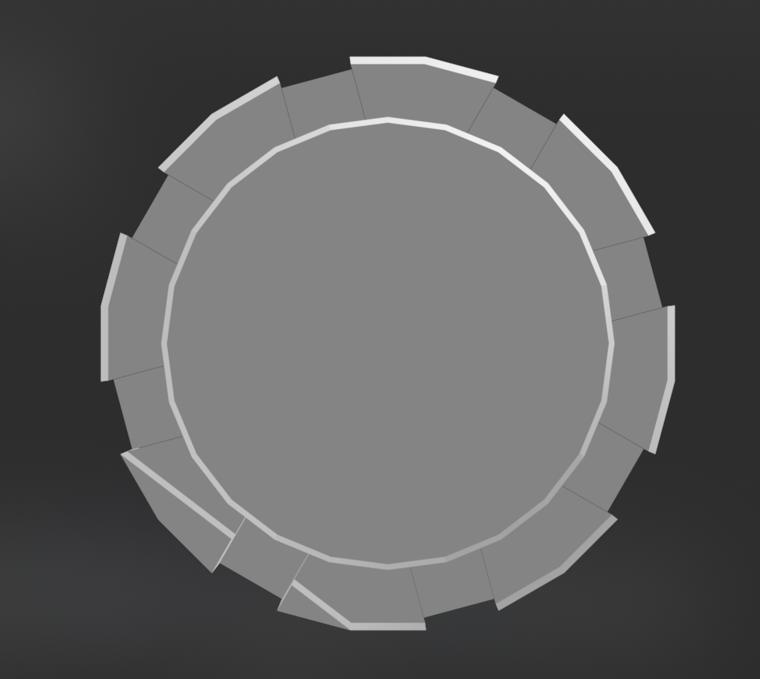
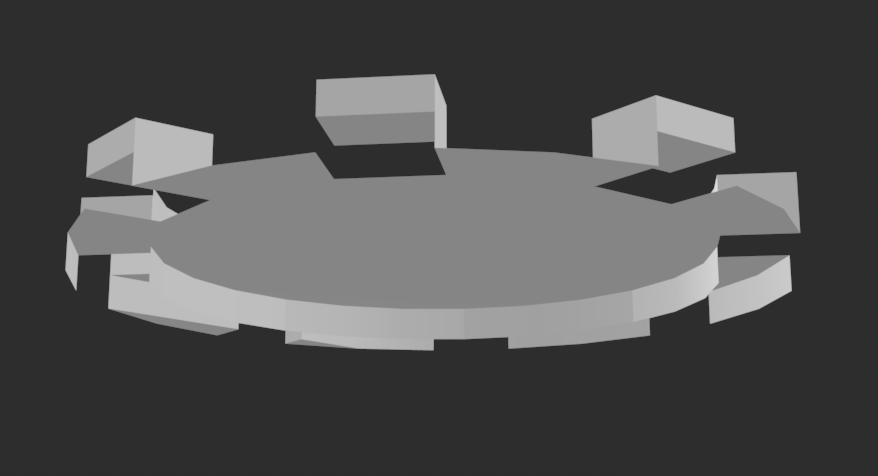

some Remnants enjoy the consistency of these. but they aren't very useful.
everyone's always coming and going.
things run fast here, so you'll be staying here until you've gotten used to the pace and movement of things here.
you can also have a companion if you'd like. we can create one for you or you may find a Remnant interesting.